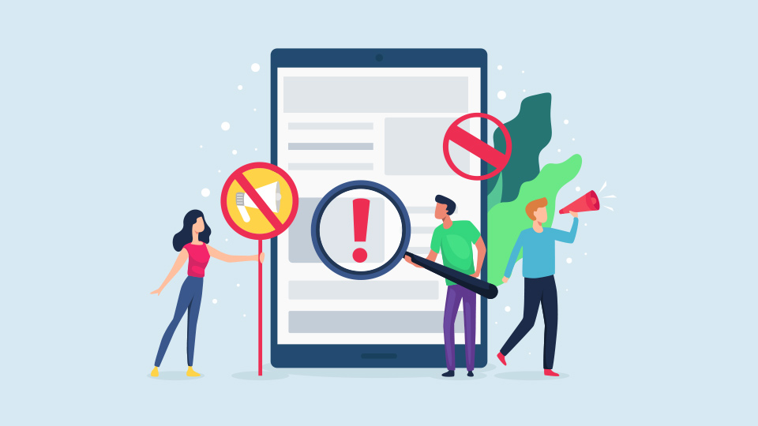
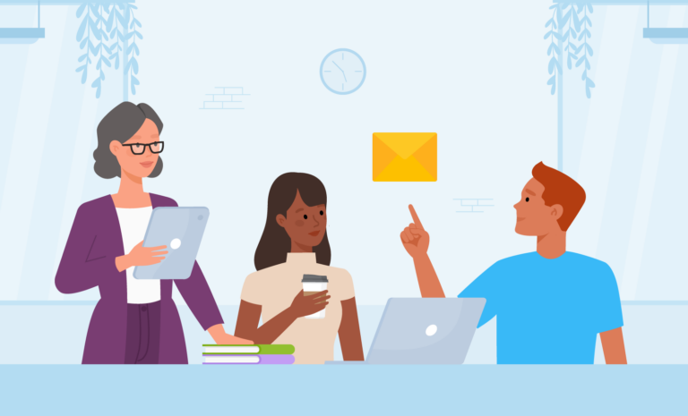
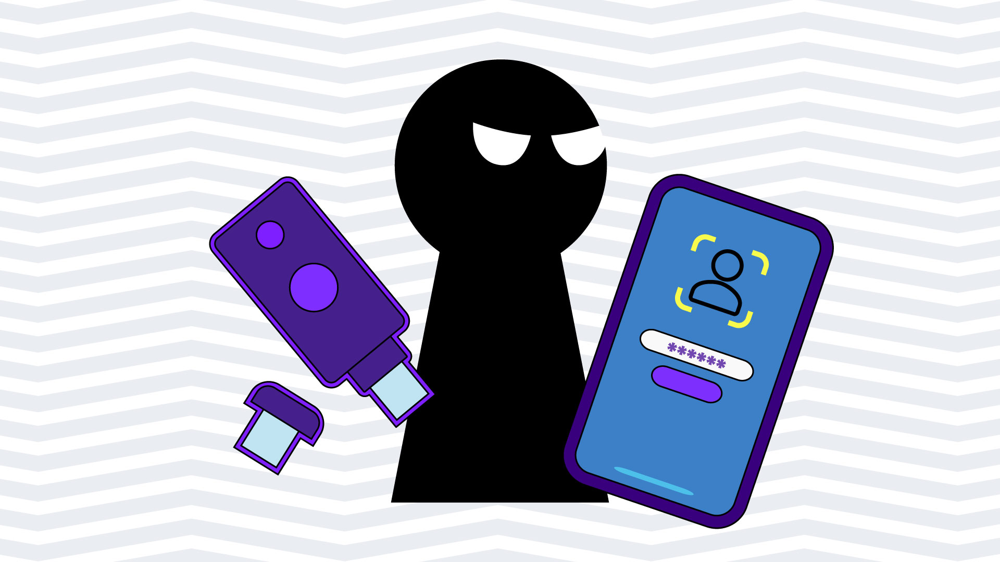

Apa itu penggunaan media sosial yang benar?
˙✧˖°📺 ⋆｡˚๋࣭ ⭑✮💻₊ ⊹

Penggunaan media sosial yang benar adalah landasan utama dalam membangun keberadaan digital (digital presence) yang sehat, aman, dan berdampak positif. Di era transformasi digital saat ini, media sosial bukan lagi sekadar sarana hiburan atau tempat menghabiskan waktu luang, melainkan telah berkembang menjadi platform utama untuk komunikasi, pembangunan merek personal (personal branding), hingga pengembangan karier dan bisnis. Namun, kemudahan akses dan kebebasan bereksplorasi di dunia maya membawa tantangan yang tidak sedikit. Tanpa pemahaman yang memadai mengenai etika dan keamanan, pengguna berisiko terjebak dalam masalah hukum, gangguan kesehatan mental, atau kejahatan siber. Oleh karena itu, penerapan panduan penggunaan media sosial secara menyeluruh menjadi hal yang sangat krusial bagi setiap individu.
Bagaimana caranya?
Untuk menggunakan media sosial dengan benar, beberapa langkah yang dapat diambil antara lain:
Menjaga privasi

Langkah paling mendasar dalam menggunakan media sosial secara benar adalah melindungi informasi sensitif. Data pribadi seperti Nomor Induk Kependudukan (NIK), alamat rumah lengkap, rincian perbankan, nomor telepon pribadi, hingga jadwal perjalanan secara real-time tidak boleh dipublikasikan secara terbuka. Kebiasaan membagikan informasi sensitif secara ceroboh dapat dimanfaatkan oleh pihak yang tidak bertanggung jawab untuk tindakan kejahatan seperti pencurian identitas, peretasan akun, atau penipuan finansial. Selain itu, pengamanan secara teknis seperti pembuatan kata sandi yang kuat dan unik serta aktivasi fitur autentikasi dua langkah (2FA) merupakan keharusan untuk menjaga integritas akun dari peretas.
Berpikir sebelum membagikan

Prinsip Think Before You Post atau berpikir sebelum mengunggah harus menjadi kebiasaan mendasar. Setiap tindakan di media sosial—baik berupa unggahan foto, teks, komentar, maupun tombol suka—akan membentuk jejak digital yang tersimpan dalam jangka panjang dan sangat sulit dihapus secara permanen. Jejak digital ini sering kali menjadi bahan pertimbangan bagi institusi pendidikan, perekrut kerja, atau mitra bisnis di masa depan. Unggahan yang mengandung ujaran kebencian, diskriminasi SARA, atau konten provokatif dapat merusak reputasi profesional dan hubungan sosial seseorang dalam jangka panjang.
Memverifikasi informasi
Penyebaran berita bohong (hoaks) dan disinformasi berkembang sangat pesat di platform media sosial. Pengguna yang bijak tidak akan langsung mempercayai atau membagikan ulang suatu informasi hanya karena judulnya yang menarik atau provokatif. Penting untuk memverifikasi kebenaran informasi melalui teknik perbandingan sumber (cross-checking) dengan media massa tepercaya atau situs resmi pemerintah sebelum menyebarkannya. Langkah ini sangat penting untuk menjaga kondusivitas ruang publik digital dan mencegah timbulnya kepanikan massal.
Beretika dalam komunikasi

Ruang digital merupakan cerminan dari budaya dan etika di dunia nyata. Komunikasi di media sosial tetap memerlukan kesantunan, empati, dan rasa hormat terhadap perbedaan pandangan. Perilaku destruktif seperti perundungan siber (cyberbullying), pencemaran nama baik, atau melontarkan komentar kasar (flaming) tidak hanya merugikan kesehatan mental korban, tetapi juga berpotensi melanggar regulasi hukum yang berlaku, seperti Undang-Undang Informasi dan Transaksi Elektronik (UU ITE).
Amankan akun

Perlindungan teknis terhadap akun media sosial merupakan benteng utama dari ancaman peretasan dan pengambilalihan hak akses oleh pihak yang tidak bertanggung jawab. Pengguna wajib membuat kata sandi yang kuat dan unik, yaitu kombinasi antara huruf besar, huruf kecil, angka, dan simbol, serta menghindari penggunaan data pribadi yang mudah ditebak seperti tanggal lahir. Selain itu, aktifkan fitur autentikasi dua faktor (2FA) pada setiap akun untuk memberikan lapisan keamanan ganda. Jangan pernah membagikan kode OTP (One-Time Password) atau kata sandi kepada siapa pun, dan pastikan untuk selalu keluar (logout) dari akun jika menggunakan perangkat umum atau milik orang lain..
Batasi waktu penggunaan
Penggunaan media sosial yang benar juga mencakup pengelolaan waktu dan batasan diri. Konsumsi media sosial yang tidak terkontrol dapat menyebabkan ketergantungan, memicu fenomena Fear of Missing Out (FOMO), meningkatkan risiko depresi, serta mengganggu produktivitas harian. Menetapkan batasan durasi harian, mematikan notifikasi pada jam-jam tertentu, dan secara berkala melakukan digital detox sangat dianjurkan agar kehidupan di dunia nyata tetap berjalan seimbang dan harmonis. Menggunakan media sosial secara benar tidak hanya berfokus pada tindakan pencegahan dampak negatif, tetapi juga pada bagaimana memanfaatkan platform tersebut secara konstruktif. Media sosial dapat digunakan sebagai sarana untuk mempelajari keterampilan baru, memperluas jaringan profesional melalui platform seperti LinkedIn, menyuarakan isu-isu sosial yang bermanfaat, hingga membangun portofolio karya.